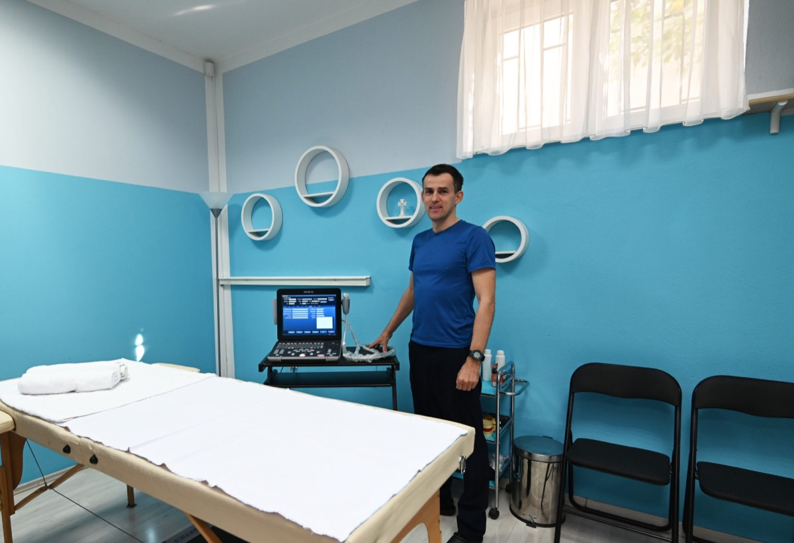

Goran Vratarić
Diplomirani fizioterapeut
- 2007Viši fizioterapeut, Sveučilište u Splitu
- 2009McKenzie institut, A tečaj (lumbalna kralježnica); prvi i drugi stupanj kinesio taping metode (Kinesio Taping Association International)
- 2010McKenzie B tečaj (cervikalna i torakalna kralježnica)
- 2009–2011Diplomirani fizioterapeut, specijalistički studij na Zdravstvenom veleučilištu u Zagrebu
- 2019Level 1 – dijagnostički ultrazvuk mišićno-koštanog sustava
- 20206. stupanj Emmett tehnike, licencirani Emmett terapeut